CodeBuddy Memory · 发布站
把产品介绍、安装包下载、更新日志和构建发布放到一个网站中。管理端将拉取代码、应用打包和版本发布组织成一条流程。

把发布过程串起来
网站承担产品介绍、下载和更新日志展示；管理端可以发起构建，将拉取应用源码、安装依赖、打包和整理更新内容连接起来。
既能自动构建，也能管理版本
工程包含构建日志查看、安装包上传、更新日志编辑和版本管理。自动构建依赖桌面应用源码和对应平台的打包环境，手动上传用于补充发布流程。
项目的职责
这是围绕 CodeBuddy Memory 建立的介绍与发布网站，与客户端本体、记忆聚合服务分别承担不同职责。构建和发布能力需要部署环境与应用源码配合。